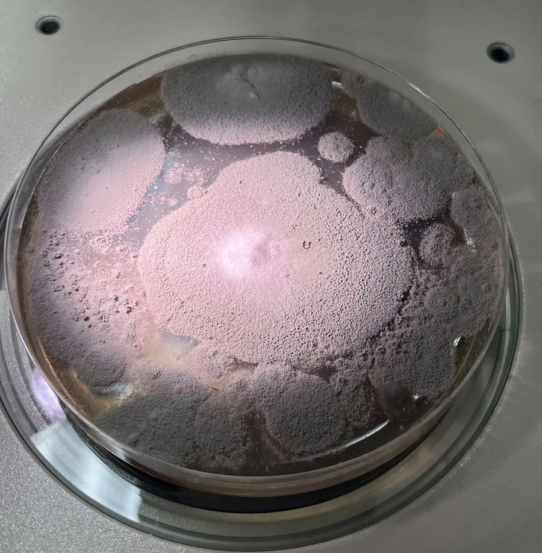

真菌 · 真菌界
马尔尼菲篮状菌 Talaromyces marneffei

双相型真菌，菌落产红色色素，主要感染免疫低下的人群，引起发热、皮疹与多器官损害，病死率高。
- 分类
- 门子囊菌门纲散囊菌纲目散囊菌目科曲霉科属篮状菌属
- 栖息环境
- 东南亚与华南的土壤、竹鼠等啮齿动物，热带季风区多见
- 地理分布
- 中国华南、东南亚（泰国、越南、老挝）为主，其他地区偶见输入病例
- 保护级别
- 暂无评估；作为机会性病原存在
物种志
马尔尼菲篮状菌为双相型真菌：室温下呈菌丝相，菌落生长较快，初白色绒毛状，后转黄绿至灰绿，并产生可扩散的红色色素；镜下为分枝有隔菌丝与帚状梗。人体温度下转为酵母相，细胞呈椭圆形、有横隔。
马尔尼菲篮状菌主要分布于东南亚与中国华南，与竹鼠等啮齿动物有关，人可能经吸入孢子感染。它是机会性致病菌，免疫正常者少见发病，而 HIV 感染者、长期使用免疫抑制剂者可出现发热、体重下降、特征性丘疹（中央坏死如脐凹）、肝脾淋巴结肿大，若不治疗病死率极高。防治以尽早识别免疫低下者的感染、规范抗真菌治疗为主；接触竹鼠或疫区土壤后应洗手，但一般不人传人。
形态与习性
- 菌落菌丝相初白后转黄绿，产红色色素
- 双相性体内转为酵母相，细胞有横隔
- 分布中国华南与东南亚，与竹鼠相关
- 易感人群HIV 感染者与免疫抑制者
- 临床表现发热、脐凹状丘疹、肝脾淋巴结肿大
- 风险免疫低下者病死率高，须尽早治疗
趣味知识
- 它的菌落会分泌红色色素，把培养基底染成酒红色，是重要的鉴定线索。
- 患者皮肤上出现的丘疹中央常凹陷如肚脐，是较有特征的表现。
- 它主要攻击免疫低下者，健康人感染后多能自行控制。
- 该菌与竹鼠关系密切，华南与东南亚是主要流行区。